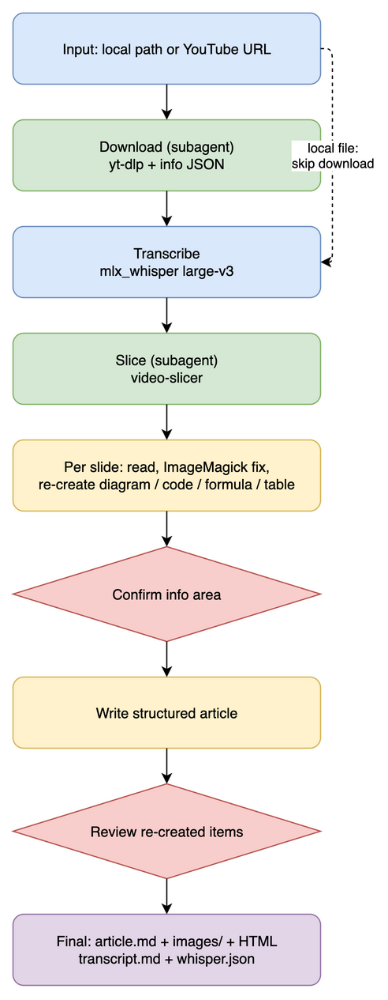
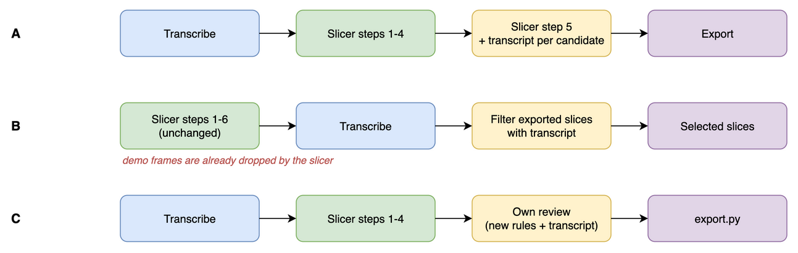
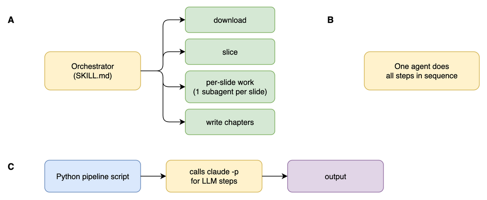
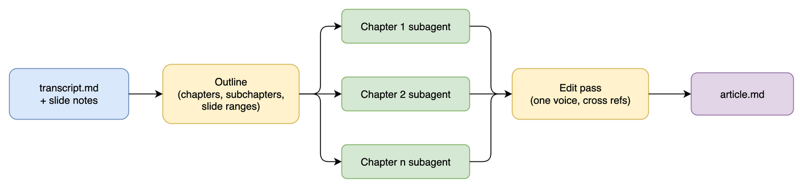

Talk to Article: Brainstorm
script / tool
subagent
LLM judgment
user gate
output
Pipeline (current understanding)

1. How does the transcript help select images?
video-slicer step 5 drops live demo frames (IDE, terminal, browser). Tool screenshots can be worth keeping. Each candidate has a timestamp, which maps to the transcript.

- ⭐ a) Option A: transcribe first, run slicer steps 1–4, override step 5 in the brief (transcript excerpt per candidate; keep demo frames the speaker refers to). Reuses the slicer.
- b) Option C: own review step after slicer steps 1–4. Full control, duplicates the slicer's rules.
- c) Option B: slicer unchanged, filter afterwards. Cannot recover dropped demo frames.
2. How is the work orchestrated?

- ⭐ a) Option A: one orchestrator
SKILL.md, subagents per phase. Keeps the context of each step small; per-slide and per-chapter work runs in parallel. Same pattern as music-transcriber.
- b) Option B: one agent does all steps. Simple, but a 45 min talk with 40 slides overflows one context.
- c) Option C: Python script that calls
claude -p. Deterministic order, but hard to add user gates and loses the skill format.
3. How is the per-slide work split?
Per slide: read text (vision + tesseract), fix image with ImageMagick, re-create diagram / code / formula / table, note what is not spoken.
- ⭐ a) One subagent per slide, several in parallel. Input: slide PNG + transcript excerpt for its time range. Output:
slides/NNNN.md (slide text, kind, unspoken content, re-created assets, ImageMagick commands).
- b) One subagent per batch of about 10 slides. Fewer agents, less parallel.
- c) The orchestrator does all slides. Context overflow on long talks.
4. How is the article written?

- ⭐ a) Outline first (chapters, subchapters, slide and time ranges), then one subagent per chapter in parallel, then one edit pass for a single voice and cross references.
- b) One agent writes the whole article in one pass. Consistent voice, context limits on long talks.
- c) Chapter subagents without an edit pass. Fast, uneven style.
5. Where does the chapter structure come from?
- ⭐ a) Both: section and title slides give the frame, transcript topic shifts refine it (also for talks with few slides).
- Answer: a. Many decks have no section or title slides. Then the LLM takes the structure from the transcript alone.
- b) Slides only.
- c) Transcript only.
6. How does the user review (info area, re-created items)?
- ⭐ a) Local HTML page: original screenshot next to the re-created item, a form per item (ok / fix + comment). Answers go to a localhost server that writes a JSON file the agent reads. Same as music-transcriber's review rule.
- b) Review version as Markdown; user answers in chat.
- c) Published Claude artifact with comments.
7. Scripts and tests?
- ⭐ a) Python 3 scripts run with
uv (PEP 723 inline deps), pytest via uv run --with pytest; skill evals against one reference talk.
- b) Python scripts with unit tests only, no evals.
- c) Shell scripts.
8. Which reference talk for evals?
- ⭐ a) A talk you pick (10–20 min) that has its slides as PDF: slide recall and content can be checked against the PDF, as in video-slicer's evaluation.
- b) A public, CC-licensed talk on YouTube, chosen by me.
- c) No evals for now.
- Answer: a, two talks from
~/Downloads, slides as .pptx (not PDF):
- Don't be a fool with a tool: 46 min, 1280x720; deck from askui Hackathon 2023-03, 55 slides
- Extreme learning situations as testers (EclipseCon 2020): 22 min, 1920x1050; 31 slides
9. Output folder layout?
- ⭐ a)
<video>-article/: article.md, article.html, transcript.md, whisper.json, images/, diagrams/ (.drawio + export), reference/ (original screenshots), imagemagick.log. Work files in a temp dir.
- b) Same, but work files (slide notes, outline) kept in
work/ for debugging.
- c) Flat folder, all files side by side.
10. Where do the reference talks live?
Videos are 108 MB and 72 MB; too big for plain git.
- ⭐ a) Videos and .pptx in gitignored
testdata/talks/<name>/; the ground truth derived from them (slide text, slide PNGs) committed next to them.
- b) Evals point to absolute paths in
~/Downloads.
- c) Git LFS for the videos.
11. How is ground truth made from the .pptx?
- ⭐ a) LibreOffice (
soffice, installed) renders each slide to PNG, for checking slide recall; the pptx-to-markdown skill gives slide text and speaker notes, for checking that unspoken slide content reaches the article.
- b) Slide text only.
- c) You check the results by hand.
- Answer: PDF exports of both decks exist (
~/Downloads, 31 and 55 pages, same count as the .pptx). Use the PDFs for slide images, the .pptx for text and notes. Animations: only the askui deck has them, on 7 slides, all entrance effects (20 in total). The PDF shows the final state; the slicer also keeps only the final state of a build, so they match. Earlier build steps are not counted as missed.
12. The askui deck (2023-03) may not match the recorded talk. How to handle it?
- ⭐ a) Map recorded slides to deck slides first; count recall only on matched slides; list unmatched slides on both sides in the eval report.
- b) Use only the EclipseCon talk for evals.
- c) Ignore the mismatch.
- Answer: the deck is the same as in the recording. Compare 1:1, no mapping step.